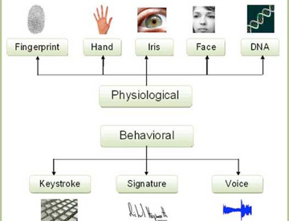

Master Course Biometrics 2018



Biometrics refers to the automated recognition of individuals based on their behavioural (speech, ...) and biological (face, fingerprint, iris, ...) characteristics for identification or authentication. It is a truly multidisciplinary domain at the intersection of bio-physiology, signal processing, machine learning, and cryptology, and provides multiple fundamental scientific challenges in these domains.
This course introduces to the analysis, modelling and interpretation of biometric data for biometric person recognition, forensic biometrics, cybersecurity and behavioural biometrics in man-machine communication.
The course is proposed at UNIL (UNIL Biometrics) as a compulsory course of the Master of Science (MSc) in “Forensic Science, orientation Physical Identification”, a option course of the Master of Science (MSc) in “Forensic Science, orientation Chemical Criminalistics” and the Master of Science (MSc) in “Forensic Science, orientation Digital Investigation and Identification”.
This course is also proposed at EPFL (UNIL-402) as an optional Master course.
The main instructor is Sébastien Marcel.
Program:
-
• Lectures: 28 hours
-
• Labs: 14 hours (!! personal laptop required !!)
-
• Assessment: final exam (Jan 11-Feb 2 2019) and possible assignments
-
• Dates: every thursday from 9:00 to 12:00 September 20th - December 20th 2018
-
• Room: UNIL Amphipôle 210
Required prior knowledge:
Linear algebra, Probabilities and Statistics, Python basics
Content and schedule:
-
• Sep 20: Lecture: Introduction to biometrics, principles, classification theory
-
• Sep 27: Lecture: Face recognition
-
• Oct 4: Lab: Face recognition
-
• Oct 11: Lecture: Speaker recognition
-
• Oct 18: Lab: Speaker recognition
-
• Oct 25: Lecture: Fingerprint recognition
-
• Nov 1: Lecture: Iris recognition
-
• Nov 8: Lab: Iris and Fingerprint recognition
-
• Nov 15: Lecture: Vein recognition, multi-modal and soft-biometrics
-
• Nov 22: Lab: Vein and multi-modal recognition
-
• Nov 29: Lecture: Security of biometrics (spoofing and anti-spoofing)
-
• Dec 6: Lecture: Template Protection
-
• Dec 13: Lab: Spoofing and Anti-Spoofing
-
• Dec 20: Lecture: XXX -- XXX
Master Course Biometrics at UNIL and EPFL